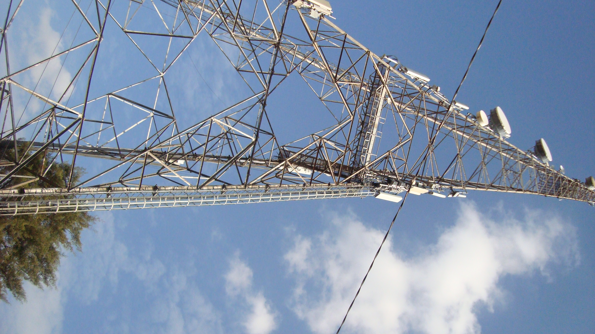

The JBL GO 2 is a full-featured waterproof Bluetooth speaker to take with you everywhere. Wirelessly stream music via
Bluetooth for up to 5 hours of continuous JBL quality sound.
A mast is a ground-based or rooftop structure that supports antennas at a height where they can satisfactorily send or receive radio waves.
Typical masts are of steel lattice or tubular steel construction. Masts themselves play no part in the transmission of mobile telecommunications.

What is the description of bamboo?
Bamboo is a woody plant with a hollow stem that's in the grass family.
When bamboo is harvested and processed, it can be used to make things like flooring, paper, and chopsticks.
If bamboo is prepared correctly, it can be eaten — you'll find bamboo shoots in many Chinese dishes, for example.